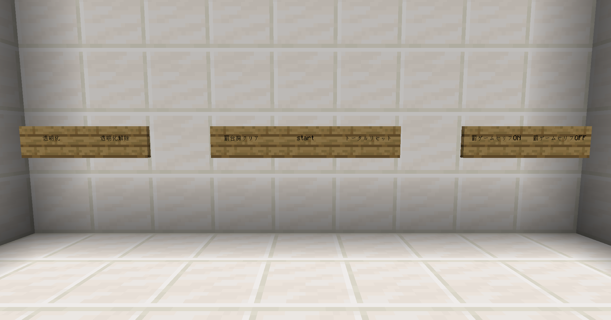

ロシアンルーレット
プレイ人数:最大6人
バージョン:1.20.2 ~ 1.20.4
既存の罰ゲームセリフを使うもよし、別途で罰ゲームを用意してしようするもよし
ただのシンプルなロシアンルーレットです
罰ゲームセリフ引用元
ルール説明
ランダムで銃を撃つ順番、弾が装填されている場所が決まります銃を持ち右クリックをすることでトリガーを引くことができあたりなら次の人へ、はずれなら死にます
設定
左から順に
- 透明化 : 誰かが罰ゲームセリフを言っている間などに透明になれます
※罰ゲームを受ける人は透明になれません - 透明化解除 : 透明になっていたのを解除します
- 罰台詞クリア : 右クリックをしたら罰がなくなり、透明化などができるようになります
(クリアせずにそのままスタートしてもいい) - スタート : ゲームをスタートします
- トータルリセット : タブを押すと見ることができる何回罰を喰らったかがリセットされます
- 罰ゲームセリフON : 罰ゲームセリフがONになり、弾丸を喰らった人にランダムなセリフが表示されます
- 罰ゲームセリフOFF : 罰ゲームセリフがOFFになり、弾丸を喰らってもセリフは表示されません

お問い合わせ、バグ報告、感想等はX(旧Twitter)のDMまで
サイト編集日:2024/5/18